Employer branding and inclusion
Arla F15
A qualitative study of how corporate identity, global career pathways and everyday belonging shape the employer story. The findings inform a proposed change programme.
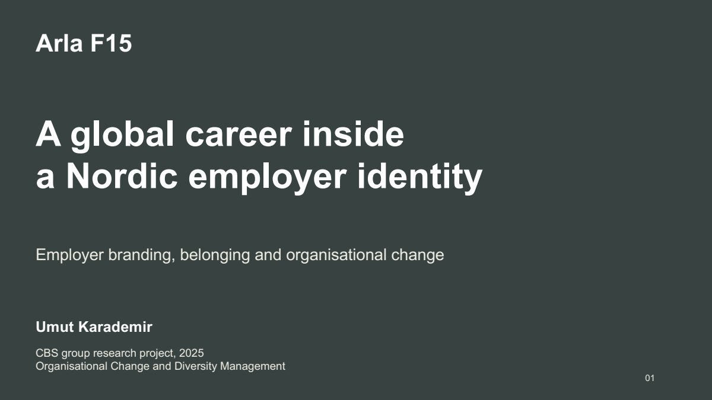
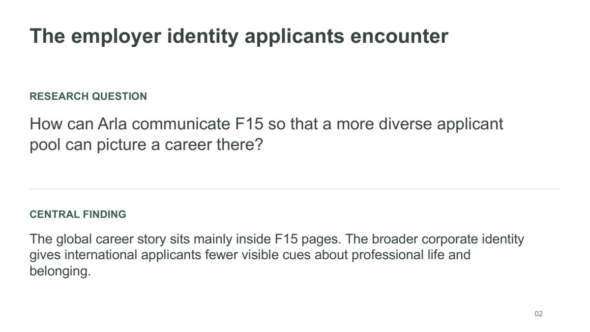
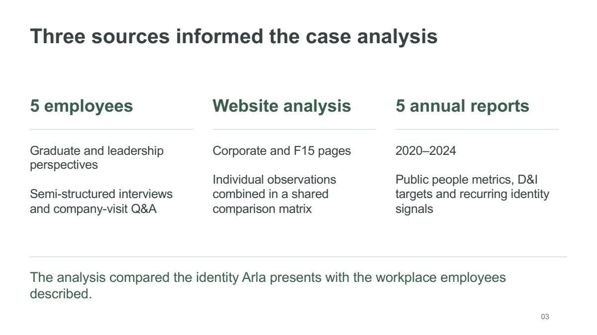
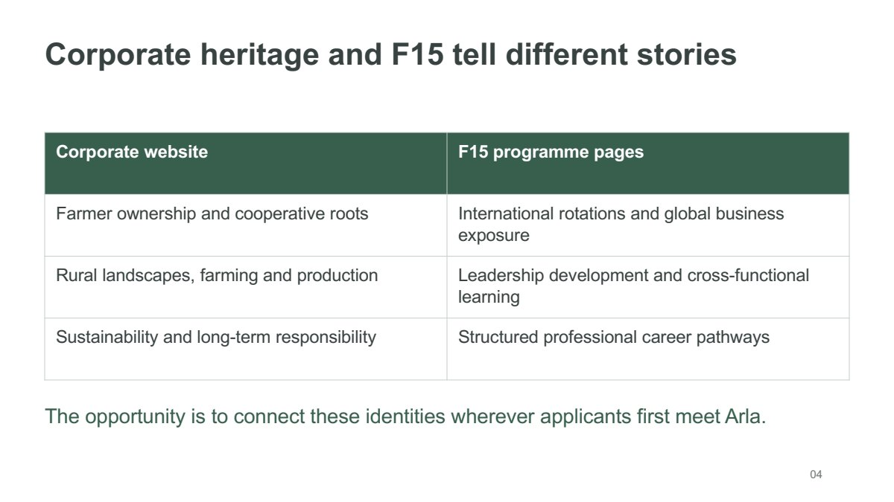
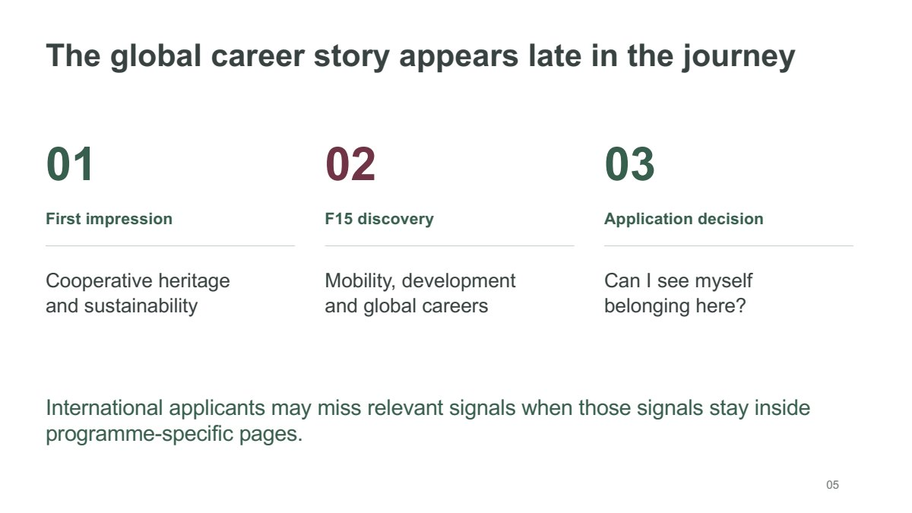
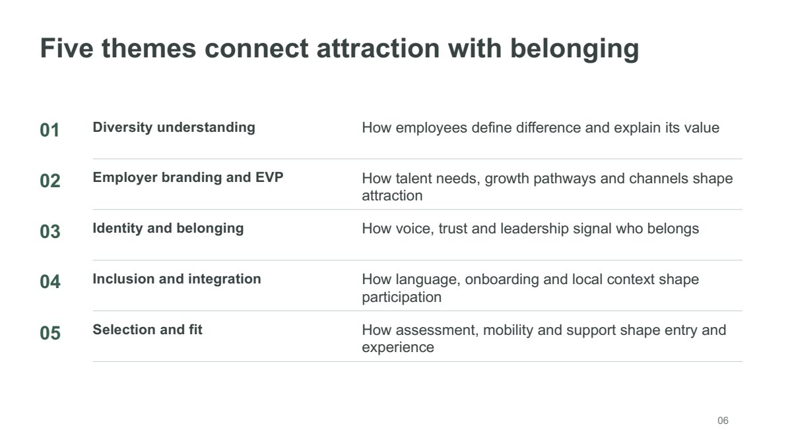
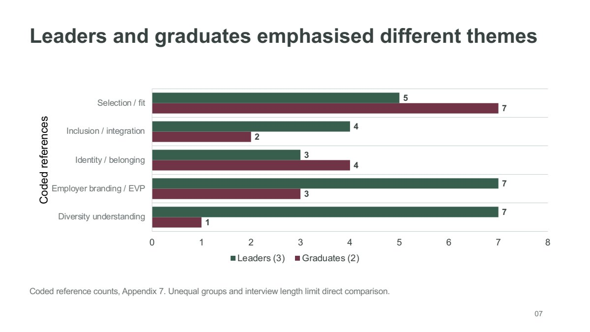
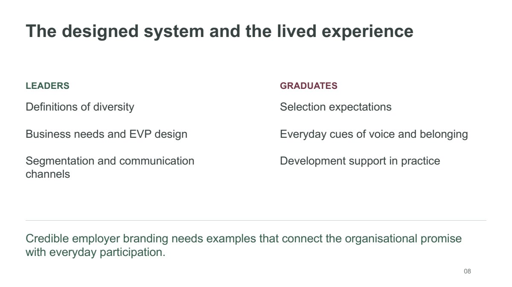
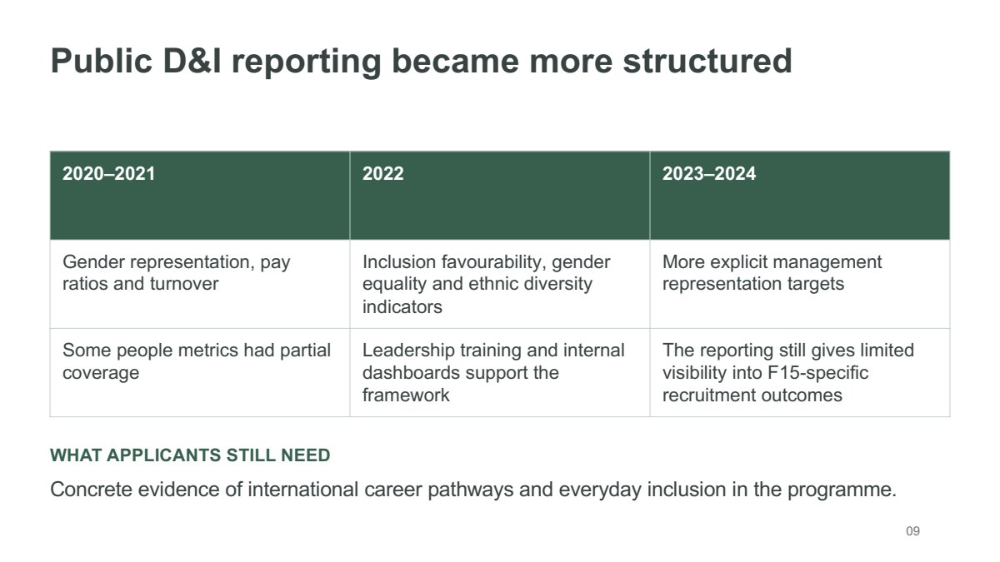
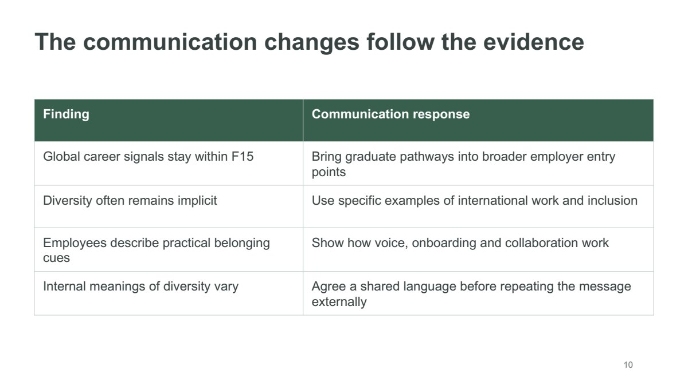
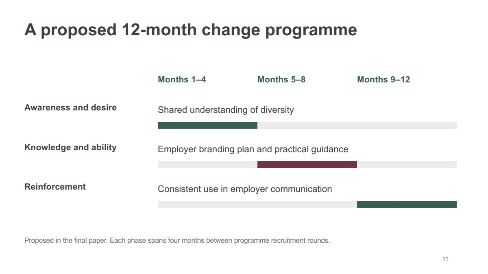
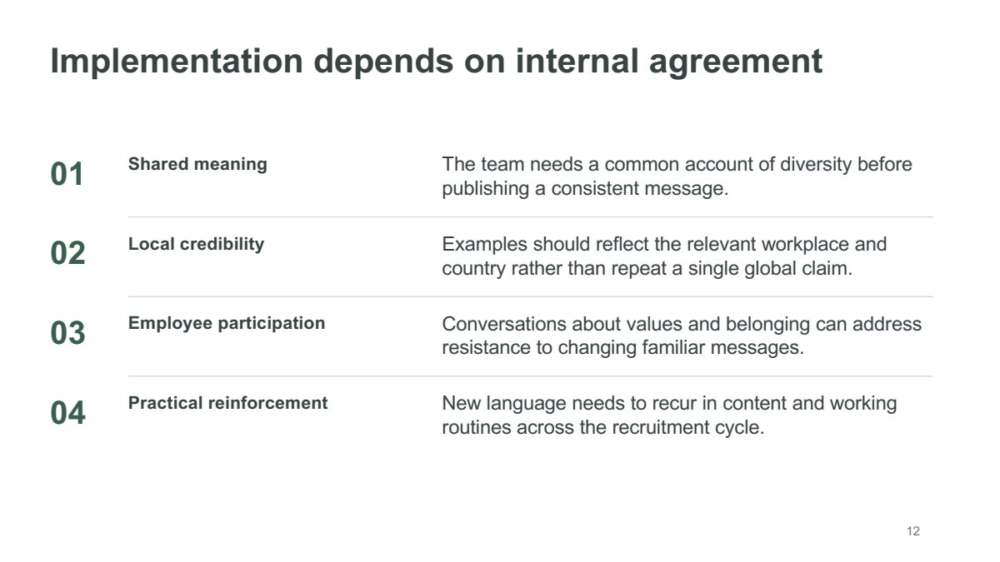
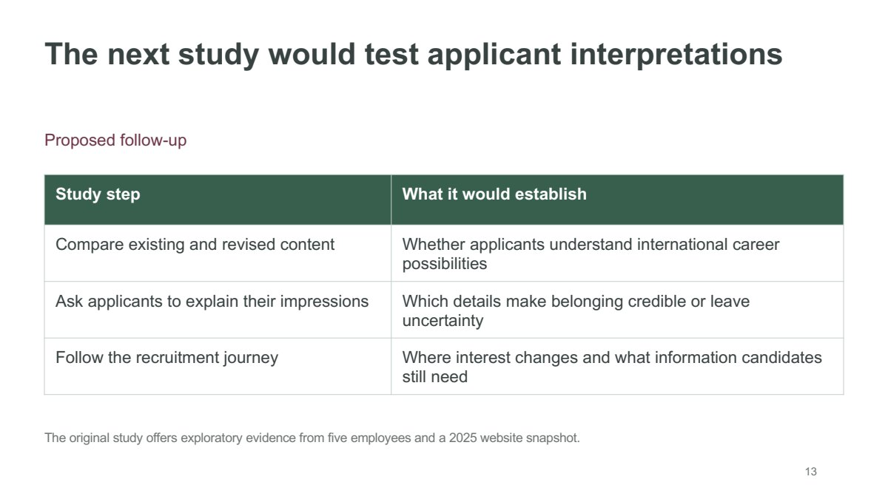
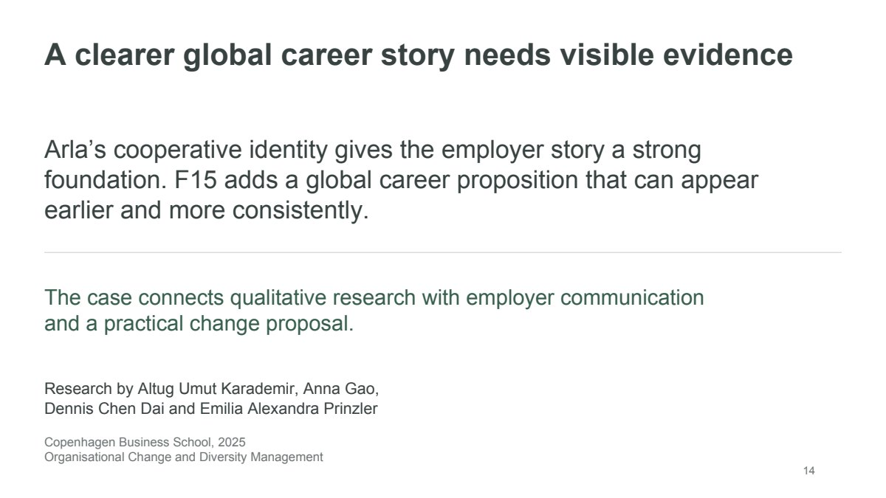